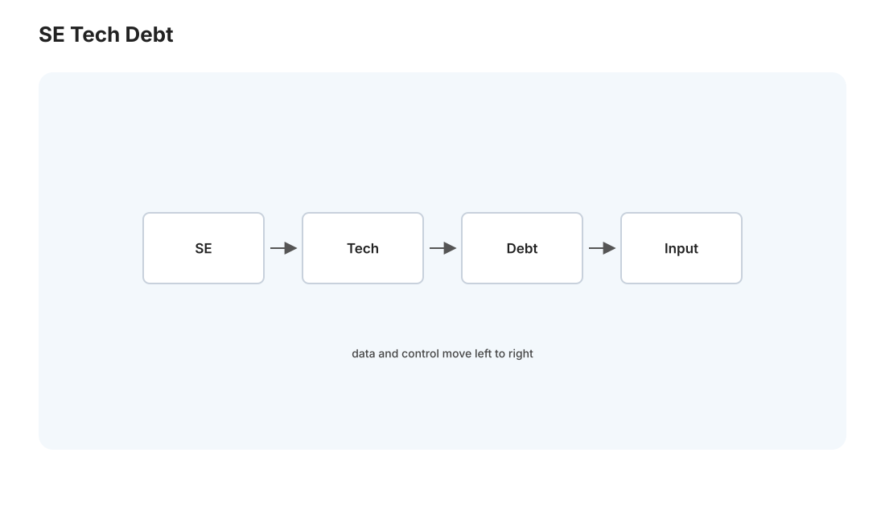
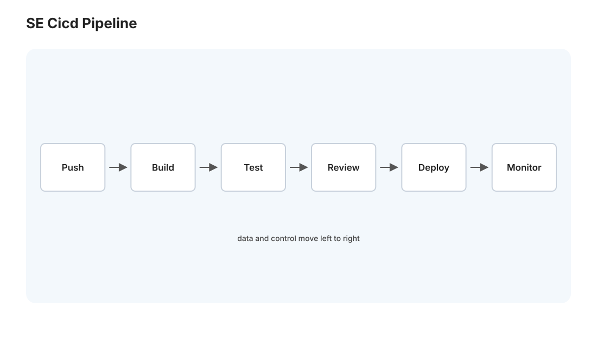

本页目录
软工 II · CI/CD 与代码质量
对标：Continuous Delivery（Humble–Farley）/ Google SWE at Google ｜ 前置：se-01（Git、测试）、cloud 线（部署目标） 从"写好代码"到"可靠地、反复地交付代码"。这一页讲 CI/CD（持续集成/持续交付——把构建、测试、部署自动化成流水线，现代软件交付的标配）和代码质量的工程实践（审查、静态分析、技术债管理）。这些是让软件项目可持续的纪律——尤其对你的 Medusa 这种要长期演进 + 多方（你/GPT/OPS）协作的系统。
学习层：流水线的绿灯，能把哪个产物送到生产？
1. 具体谜题：一个 PR 到底卡在哪里？
有四个候选发布：一个单元测试失败，一个密钥扫描失败，一个 review 尚未批准，一个金丝雀错误率升高。它们的构建都生成了文件。先预测：
- 哪一个最早的红灯足以阻止合并？
- CI 通过后，为什么还不能把任意本地目录直接部署？
- 金丝雀阶段发现回归时，应优先扩大全量、回滚，还是继续让流量进入？
实验台固定 build → test → lint → security → review → canary → deploy 的门，并隐藏每个候选的第一失败点。提交预测后，再看 gate ledger、artifact provenance 和回滚路径。重点是理解门的组合语义，不是把 CI 当作一串漂亮的状态徽章。
2. 最小模型：失败即停止，产物带着提交身份前进
把每一关表示为谓词 g_i(commit, artifact, evidence)。一个候选能合并的条件是
部署的对象不是“当前工作目录”，而是由某个已验证 commit 产生、可追溯、可复现的 artifact。金丝雀再增加运行时观测谓词 health(artifact, traffic_slice)；它通过不代表全量用户永远无故障。
3. 正式机制与不变量：CI 是门，CD 是受控传播
- fail-closed：构建、测试、静态检查、安全扫描和必要审批任一失败，默认不合并、不发布；手工 override 必须留下理由、身份和审计记录。
- 来源不变量：生产 artifact 的 commit、依赖锁文件、构建日志和签名/摘要可回溯；不能用另一份“本地等价文件”替换它。
- 门的分工：单测抓局部行为，集成测接缝，静态分析做保守筛选，密钥/依赖扫描检查供应链风险，canary 检查运行时信号。它们互补，不是重复投票。
- 恢复不变量：每次渐进发布都有可执行的回滚版本；监控信号的时间窗口、阈值和错误预算要先定义。
因此“全部绿色”只意味着声明的谓词在声明的环境中通过。它不能证明没有未知 bug，也不能替代生产可观测性和事故响应。
4. 失败边界与迁移任务
测试 flaky、扫描误报、环境漂移、未覆盖的迁移脚本、错误的健康检查和过宽的 override 都会让门失真；持续交付也不等于持续部署。实验使用固定候选和离散阶段，不模拟真实 GitHub Actions 的并发、缓存、权限和秘密注入。
迁移任务：给 Medusa 的 predict.py 设计最小 CI gate contract：依赖安装、pytest、静态检查、密钥扫描、artifact 摘要、人工批准和回滚版本各自留下什么证据。对一次故障写清“哪一关本应挡住它、为什么没挡住、如何补门”，不要只增加一个泛化的“再跑一次测试”。
JavaScript 失效时的静态读法：按流水线从左到右找第一处失败；第一处红灯就足以阻止后续传播。artifact 必须绑定已验证 commit，canary 回归应触发回滚。
| 候选 | 第一失败门 | 能合并 | 能部署 | 证据结论 |
|---|---|---|---|---|
| clean-release | 无 | 是 | 是 | artifact 与 commit 可追溯 |
| unit-regression | test | 否 | 否 | 先修局部行为 |
| secret-found | security | 否 | 否 | 轮换秘密并清理历史 |
| canary-regression | canary | 是 | 否 | 回滚，不扩大全量流量 |
1. CI:持续集成——让"合并"不再可怕
问题：多人（或你 + GPT）各自改代码，攒很久才合并 → 冲突地狱 + "在我机器上是好的"。持续集成（CI）：频繁地把改动合并到主干，每次合并自动运行构建 + 测试——尽早发现集成问题。
CI 流水线（每次 push / PR 触发，GitHub Actions 等跑）：
- 拉代码 → 构建（编译/打包，能构建吗？）。
- 跑测试（se-01 的单元 + 集成，全过吗？）。
- 静态检查（lint、类型检查、格式）。
- 失败就挡住合并——红了不许并进主干。
核心价值：主干始终处于"可构建、测试通过"的健康状态——任何人任何时候拉主干都能跑。"每次改动都自动验证"把'集成'从偶尔的大灾难变成持续的小事（🔗 memory 里"dev 声明完成后 arch 必 git verify"——CI 就是把这个 verify 自动化）。对你和 GPT 协作：CI 是自动的验收关卡，GPT 提交的代码先过 CI 再说。
2. CD:持续交付/部署——让"上线"变常规
持续交付（Continuous Delivery）：CI 通过后，自动把产物准备到"随时可一键部署"的状态。持续部署（Continuous Deployment）：更进一步，通过所有检查就自动上生产。
为什么要自动化部署：手动部署（memory 里 Medusa 的手动 schtasks、手动点开 webapp）容易出错、不可复现、依赖某个人。自动化部署：
- 可复现：每次同样的步骤（🔗 cloud-01 容器保证环境一致）。
- 快速回滚：出问题一键回上一版本——"能快速回滚"比"永不出错"更现实、更重要。
- 降低发布风险的策略：蓝绿部署（新旧两套切换）、金丝雀发布（先给 5% 流量试水，没问题再全量）、特性开关（代码上线但功能可开关控制）。
对 Medusa 的现实：它现在是手动运维（memory：webapp 挂了手动拉起、无主动告警）。本页不是要你立刻上 K8s——而是让你知道"手动运维的痛（静默失败、不可复现、依赖人）正是 CI/CD 要解决的"。哪怕先做一个"push 到某分支就自动跑测试 + 部署到 Win"的最小流水线，就消除了大量手动出错空间。
3. 代码质量:让代码能被人（和未来的你）读懂
代码写一次、读多次——可读性 > 小聪明。工程实践：
- 代码审查（Code Review）：合并前让人（或 AI，🔗 你用的 /code-review）看一遍——抓 bug、传播知识、保持一致性。审查的价值一半在质量、一半在"没有一段代码只有一个人懂"。好的审查看逻辑正确性、边界、可读性，不纠结风格（那交给自动格式化）。
- 静态分析 / Linter：不运行代码就找问题——未用变量、可能的空指针、类型错误、代码异味。这是 toc-01 Rice 定理的实用面：完美的 bug 检测不可能（不可判定），但保守的近似（宁可误报）能抓很多真问题。类型检查（pl 线）是最有价值的静态分析。
- 格式化自动化：用工具（black/prettier/rustfmt）统一格式——别在 PR 里争缩进，机器搞定。
- 代码异味与重构：重复代码、超长函数、过深嵌套、命名糟糕——是"技术债"的信号。重构（在测试保护下改善结构而不改行为，se-01）是持续偿还技术债。
4. 技术债:工程的核心权衡

技术债：为了快速交付而做的"次优但能用"的选择——像借钱，短期加速、长期付利息（越来越难改）。关键不是"消灭技术债"（不可能也不必要），而是有意识地管理它：
- 有意的债 vs 无意的债：为赶 deadline 明知故犯地走捷径（有意，记下来待还）vs 因为不懂而写的烂代码（无意，最危险）。
- 什么时候还：债拖慢了新功能开发时就该重构了——"改这块总是很痛"是该还债的信号。
- 别过度工程：为想象中的未来需求过度设计（YAGNI, You Aren't Gonna Need It）也是一种债——当下够用 + 留好扩展点的平衡（🔗 你 IBKR 工具"纯逻辑核心 + 延迟导入"、Medusa"先单机后分布式"都是这个判断）。
方法论：软件工程的成熟度，很大程度是"管理不完美"的能力——完美的代码、零债、100% 测试都不现实。知道在哪投入质量、在哪接受够用、何时还债——这种工程判断力比任何单一技术都值钱（呼应 perf 的"优化该优化的"、系统设计的"够用即可"）。
5. 把全线串起来：一个改动的完整旅程

综合 se-01/02，一个功能改动的现代工程旅程：
- 从主干拉 feature 分支（se-01 git）。
- 写代码 + 写测试（TDD/测试金字塔 se-01）。
- 本地跑测试 + lint 通过。
- push → 开 PR → CI 自动构建 + 测试 + 静态检查（本页）。
- 代码审查（人/AI）→ 修改 → 批准。
- 合并主干 → CD 自动部署（金丝雀 → 全量）。
- 监控（cloud-02 可观测性）→ 有问题快速回滚。
这条流水线就是现代软件团队的"生产线"——它让"频繁、可靠、低风险地交付"成为可能。你的 Medusa 越往这条线靠，运维就越省心、越不依赖"某个人记得怎么操作"。
6. 练习与要点
例 1（设计最小 CI） 为 Medusa 的某个组件（如 predict.py）写一个 GitHub Actions：push 时装依赖 + 跑 pytest——把"手动 verify"自动化成关卡。
例 2（识别技术债） 在 Medusa 里找一处"能用但每次改都痛"的地方，判断是有意债还是无意债、该不该现在还——练技术债的管理判断。
例 3（回滚 vs 修复） 生产出了 bug，是"赶紧回滚上一版"还是"热修复"？——权衡影响面、修复信心、回滚成本。理解"快速回滚能力"为什么是部署的核心指标（memory 里"OPS 操作前习惯性备份"正是回滚思想）。\(\blacksquare\)
下一页：云 I——容器与 Docker 原理：你的 medusa-postgres 跑在 Docker 里，但容器底下是什么？Linux 内核的隔离原语如何造出"轻量虚拟机"的幻觉。